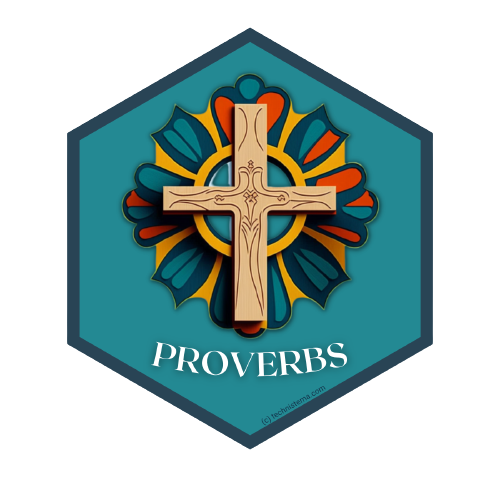
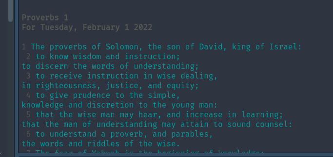
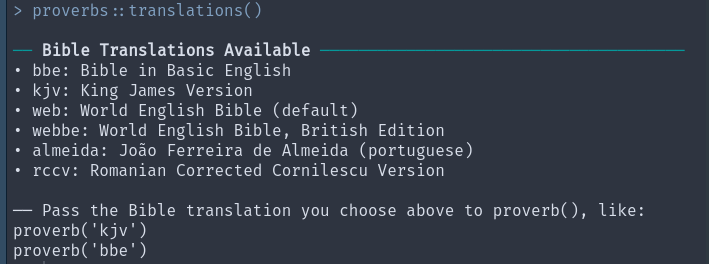

Announcing proverbs; A Package For Printing a Daily Proverb in R
LinkedIn | Github | Blog | Subscribe

“When the whirlwind passes, the wicked is no more, but the righteous has an everlasting foundation”
- Proverbs 10:25 (NASB)
I like to read one chapter from the Book of Proverbs from the Bible each day. There are 31 chapters in proverbs, so if I read one each day corresponding to the day of the month, I read proverbs each month through. Easy to follow and great for memorization.
Anyways, I wanted to automate this in R because why not. I found a free API for many of the open source or public domain Bible versions like the King James Version and the World English Bible at https://bible-api.com. Then I made a quick wrapper R package on top of that API and {proverbs} was born.
Usage
It’s very simple to use:
proverbs::proverb()prints out the proverb for today with the default World English Bible translation.

Nice! We can switch up the translation as well. Check out all the translations with this function:
proverbs::translations()
So if the King James is your thing, here you go:
proverbs::proverb(translation = "kjv")Print at R startup
Sometimes it’s necessary to force oneself to do the thing that one should do. One way to do this is to print the day’s proverb to console any time you start or restart RStudio.
We can do that by modifying our .Rprofile file. For our purposes, we will modify the version that affects your base user environment.
There is a handy function is the {usethis} package that helps us edit our .Rprofile:
library(proverbs)
library(usethis)usethis::edit_r_profile(scope = "user")This will open up our .Rprofile file, and and we have to do is throw in our function from {proverbs} to make it spit out a proverb at startup:
if(interactive()) {
proverbs::proverb()
}You’ll need to restart your session but you should be greeted with a proverb after that.
Please check out the website or repo for questions or pull requests, or a star if you feel like it.
Want more content like this? Subscribe here